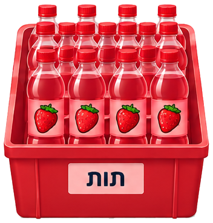
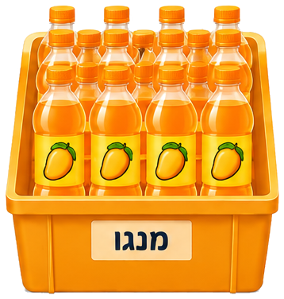
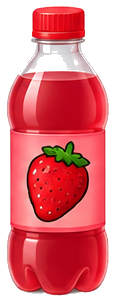
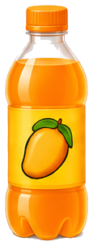

הנחיות:
- גררו בקבוקי שתייה אל המדפים.
- בכל מדף סדרו קבוצה אחת של היחס: 2 בקבוקי תות ו-3 בקבוקי מנגו.
- המשיכו עד שתסדרו את כל 60 הבקבוקים.



ספירה:

בקבוקי תות שנגררו: 0
בקבוקי מנגו שנגררו: 0
סה"כ נגררו:
0
נשארו לסידור:
60